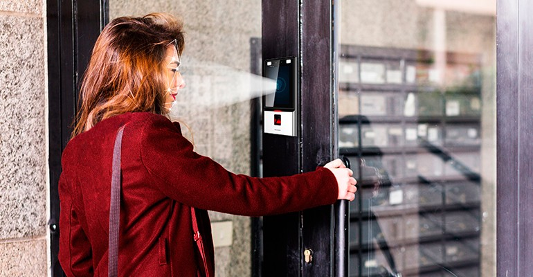

CONTROLE DE ACESSO:
Instalação de equipamentos para controle de acesso: Controladoras, Leitoras, Fechaduras, Catracas e Relógios de Ponto.O controle de acesso é importante para garantir a segurança de seus colaboradores, clientes e de seu patrimônio. Um sistema de controle de acesso permite ainda a extração de relatórios gerenciais: Saiba onde estão seus clientes, alunos e colaboradores, a qualquer momento, dentro de sua empresa. Garanta também com seu sistema de acesso, que sua equipe está cumprindo a jornada de trabalho previamente estabelecida.
Um sistema de acesso incluí uma solução de software on-line, ou seja com este software você pode saber em tempo real, quem acessou os locais controlados de sua empresa, o sistema pode ter catracas para controle de portarias e refeitórios e qualquer outro local onde seja necessário evitar o acesso de caronas, pessoas que entram juntas quando uma porta ou portão é liberado e por fim o controle de acesso completo pode contemplar coletores de dados, controladoras para gerir o acesso a portas, portões e cancelas para automóveis.
O uso de sistemas de controle de acesso, permite garantir que somente pessoas autorizadas terão acesso a áreas criticas da empresa, como almoxarifados, tesourarias, áreas de TI, entre outros.
O uso de soluções integradas, com software de gerenciamento em tempo real, coletores de dados para gestão de portas, cancelas e portões e catracas para portarias e refeitórios tem se intensificado em todos os segmentos, devido a preocupação dos empresários e do poder público com a segurança de seu patrimônio, de informações, colaboradores e clientes.